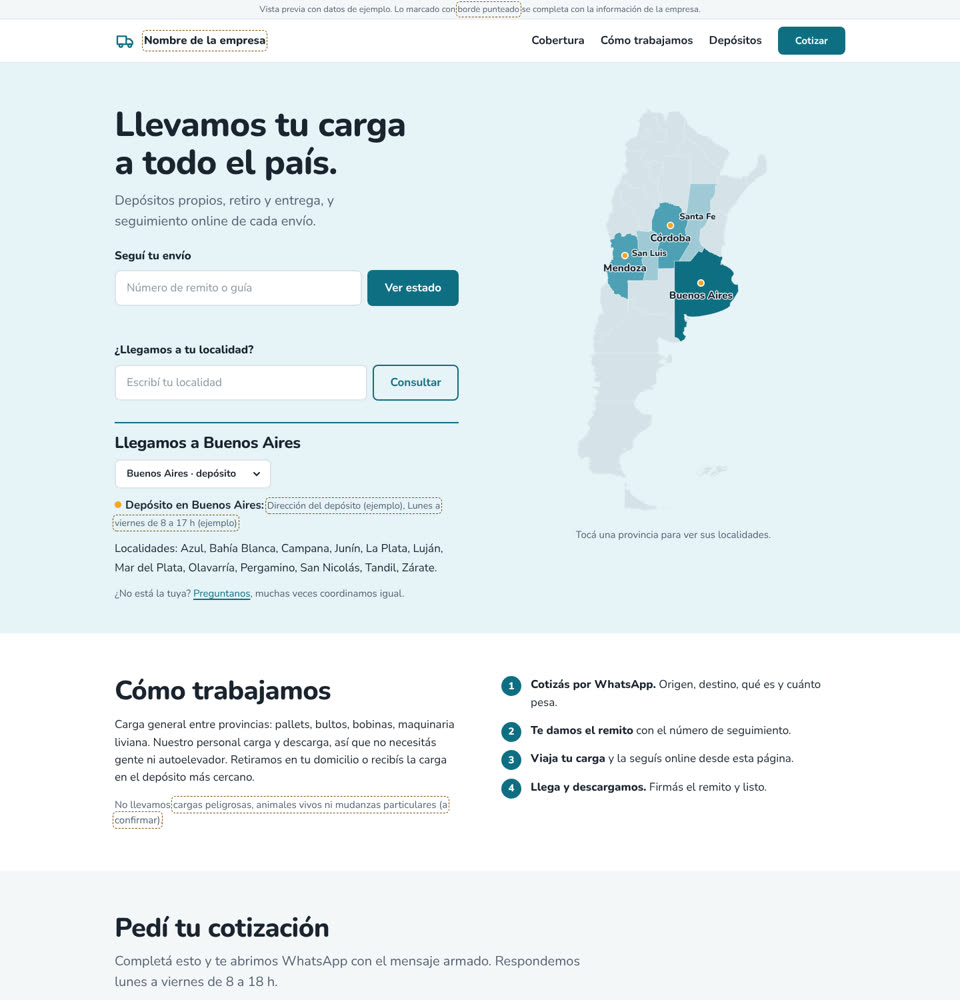
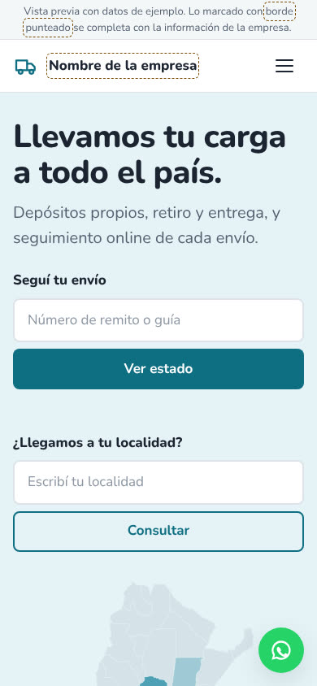
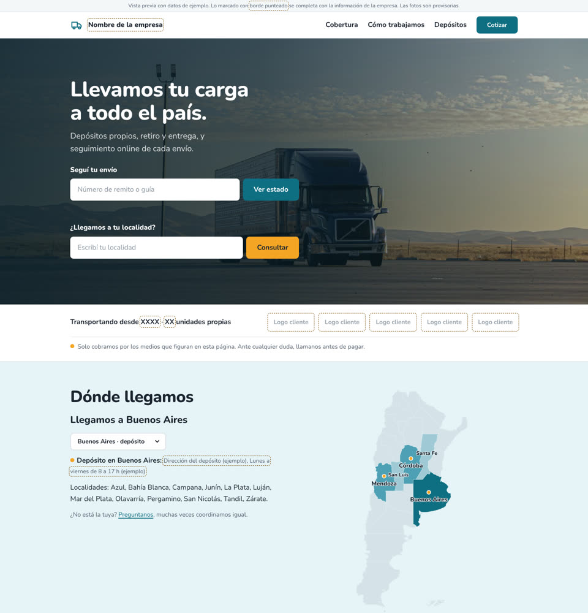
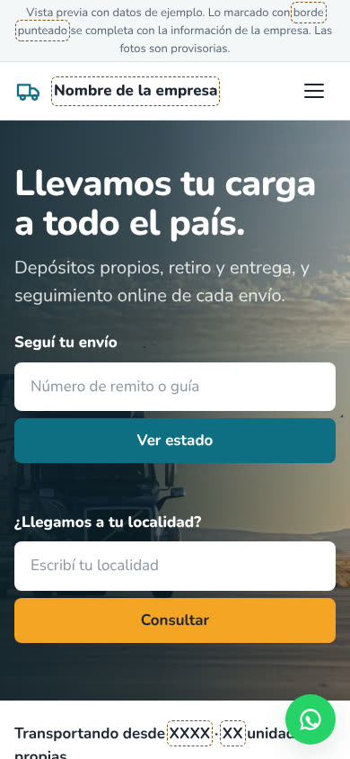
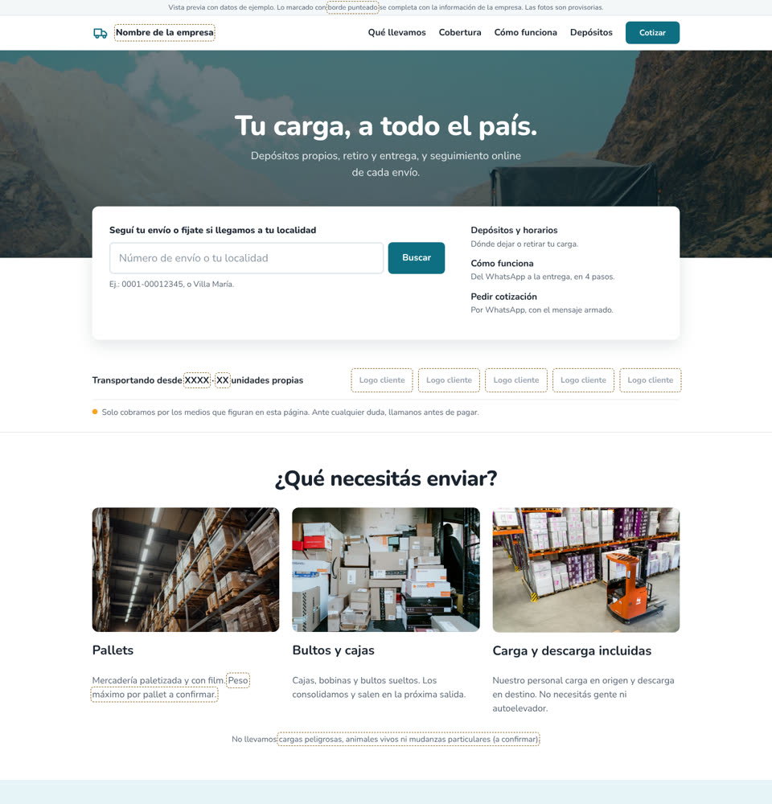
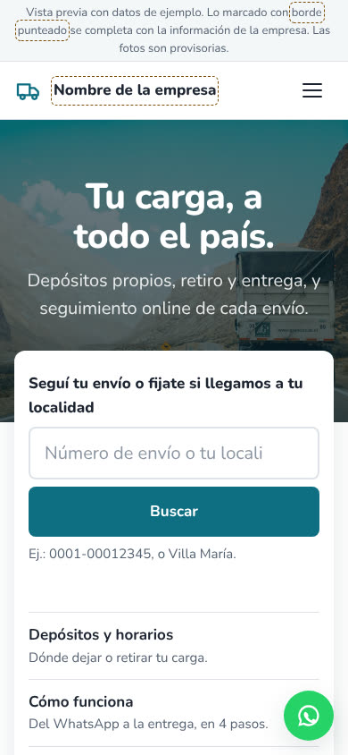

1
Compacta
Todo en una pantalla: mapa y búsquedas en la portada. La más corta y la más rápida de cargar.
- Sin fotos: el mapa es la imagen
- Cuatro bloques en total
- La más fácil de mantener


Las tres responden lo que tus clientes te preguntan por chat: dónde está mi envío, si llegan a mi localidad y cuánto cuesta. Cambia la forma, no el fondo.
Todo en una pantalla: mapa y búsquedas en la portada. La más corta y la más rápida de cargar.


La misma estructura, con una foto de la operación en la portada y una franja que muestra antigüedad, flota y clientes.


Un único campo que entiende número de envío o localidad, y cada servicio explicado con una foto.

